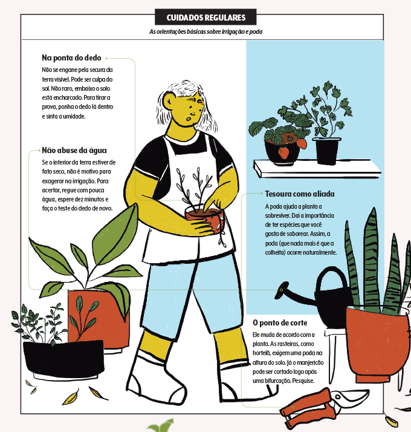
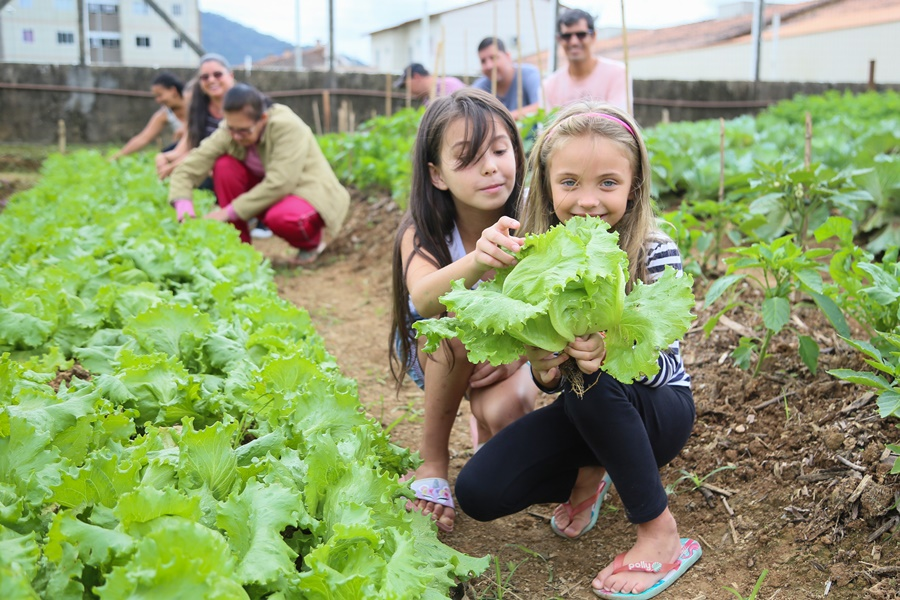

É uma ideia para celebrar e comunicar a maneira como a vida rural — com seus alimentos, práticas culturais e conhecimentos tradicionais — enriquece e sustenta a vida nas cidades.
As hortas comunitárias em áreas urbanas ajudam a solucionar problemas ambientais e sanitários, podem ocupar terrenos abandonados, reduzir o número de intermediários e favorer a poupança em termos de transporte, embalagens e armazenamento, além de que caso tenha uma horta em casa para consumo de alimentos temos os benefícios de que os alimentos seram livres de substâncias cancerígenas, proporcionaram uma alimentação mais saudável, teremos temperos sempre à mão, funciona como terapia para a mente e ajuda a economizar.
Cuidar de uma horta comunitária envolve várias práticas e responsabilidades para garantir que as plantas cresçam saudáveis e produtivas. Aqui estão alguns cuidados essenciais:
1. Preparação do solo: Certifique-se de que o solo está bem preparado antes de plantar. Isso pode incluir a adição de composto orgânico para melhorar a fertilidade e a estrutura do solo.
2. Irrigação: Mantenha um sistema regular de irrigação para garantir que as plantas recebam água suficiente. Verifique se há necessidade de regar com base nas condições climáticas e na umidade do solo.
3. Controle de ervas daninhas: Remova regularmente as ervas daninhas que competem por nutrientes com as plantas cultivadas. Isso ajuda a evitar que elas dominem o espaço e prejudiquem o crescimento das plantas desejadas.
4. Adubação: Fertilize a horta conforme necessário para garantir que as plantas tenham os nutrientes essenciais para um crescimento saudável. Pode ser necessário aplicar fertilizantes orgânicos ou minerais, dependendo das necessidades específicas das plantas.
5. Manutenção geral: Faça inspeções regulares para verificar a presença de pragas e doenças. Ação rápida pode ajudar a evitar que problemas se espalhem e causem danos significativos às plantas.
6. Rotação de culturas: Se possível, pratique a rotação de culturas para ajudar a manter a saúde do solo e reduzir problemas de pragas e doenças.
7. Colheita e replantio: Colha os vegetais no momento certo para garantir a melhor qualidade. Depois da colheita, replante novas culturas para maximizar o uso do espaço e garantir um fornecimento contínuo de alimentos.
8. Compartilhamento e comunicação: Em uma horta comunitária, é importante compartilhar tarefas e responsabilidades entre os participantes. Mantenha uma boa comunicação para coordenar os cuidados necessários e garantir que todos estejam envolvidos no processo de cuidado da horta.
Ao seguir essas práticas básicas, você ajudará a manter a horta comunitária produtiva e saudável, proporcionando alimentos frescos e nutritivos para todos os envolvidos.
Promover a educação: Informar e educar a comunidade sobre práticas de cultivo sustentável, técnicas de jardinagem orgânica, compostagem e conservação de recursos naturais.
Fomentar a colaboração comunitária: Encorajar a participação ativa dos membros da comunidade na criação, manutenção e colheita da horta, promovendo um senso de comunidade e cooperação.
Fornecer acesso a alimentos frescos e saudáveis: Cultivar vegetais, ervas e frutas que são distribuídos entre os membros da comunidade, especialmente aqueles que podem não ter fácil acesso a alimentos frescos e orgânicos.
Promover a sustentabilidade ambiental: Demonstrando práticas agrícolas sustentáveis, como o uso de métodos orgânicos, a conservação da água e a redução do impacto ambiental.
Criar um espaço educativo e recreativo: Oferecer um ambiente onde as pessoas possam aprender sobre a natureza, a agricultura e o meio ambiente de uma maneira prática e envolvente.
Incentivar o consumo responsável: Promover uma mentalidade de consumo consciente, onde os participantes valorizem produtos locais e cultivados de maneira sustentável.
Contribuir para a segurança alimentar local: Ao fornecer alimentos frescos e nutritivos, a horta comunitária pode ajudar a melhorar a segurança alimentar da comunidade, especialmente em áreas urbanas ou de baixa renda.
Melhorar o bem-estar e a saúde: Estudos mostram que a jardinagem e o contato com a natureza podem ter benefícios significativos para a saúde mental e física das pessoas.
Estimular a criatividade e o aprendizado contínuo: Proporcionar um espaço onde as pessoas possam experimentar, aprender novas habilidades e descobrir o prazer de cultivar alimentos.
Servir como modelo de sustentabilidade: Inspirar outras comunidades a desenvolverem projetos similares, criando uma rede de hortas comunitárias que promovem a sustentabilidade e a segurança alimentar em larga escala.
Você pode encontrar hortas comunitárias em diferentes lugares, dependendo da sua localização.
Núcleo Regional de Segurança Alimentar e Nutricional Bairro Novo Endereço: R. Tijucas do Sul, 1700 Telefone: (41) 3221-2828
Núcleo Regional de Segurança Alimentar e Nutricional Boa Vista Endereço: Av. Paraná, 3600 Telefone: (41) 3313-5690
Núcleo Regional de Segurança Alimentar e Nutricional Boqueirão Endereço: Av. Mal. Floriano Peixoto, 8430 Telefone: (41) 3313-5518
Ao encontrar uma horta comunitária que lhe interesse, não hesite em entrar em contato com os responsáveis para obter mais informações sobre como se envolver, as regras de participação e quaisquer eventos ou atividades planejadas.😉
Veja mais em: Hortas Comunitárias Urbanas - Curitiba